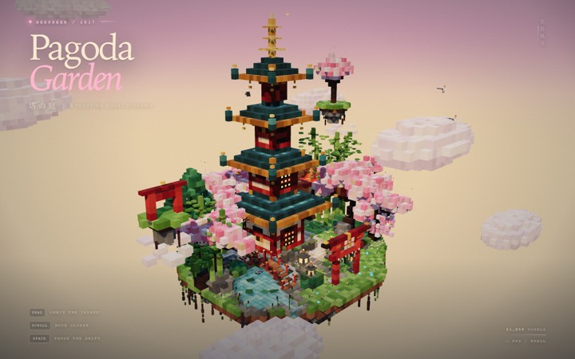

PassPagoda Garden
0 JS errors · 21,859 voxels · non-bg 99.7 % · colourful 72.4 %
Four-tier pagoda, torii gates, koi pond, waterfalls, cranes. 69 KB, run cost $0.11, ~16 min. The model verified its own output in headless Chrome and fixed a NaN warning before finishing.